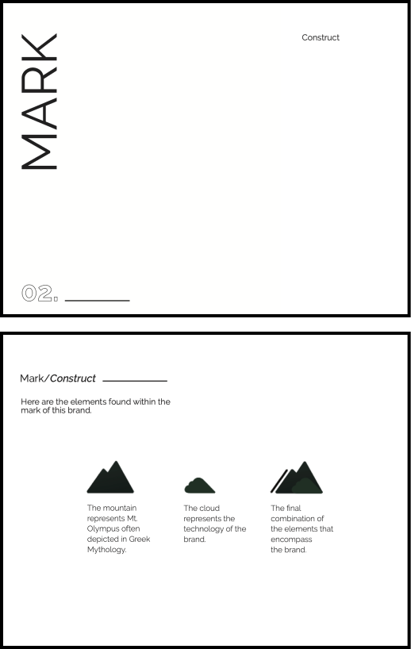
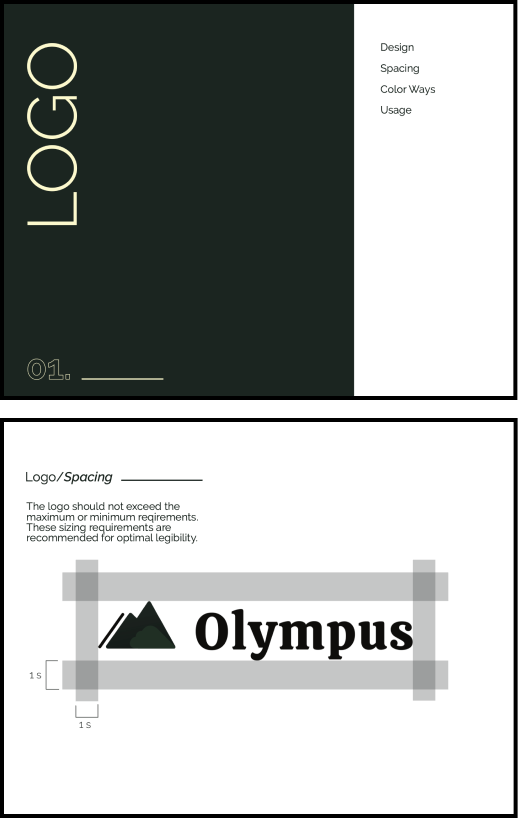
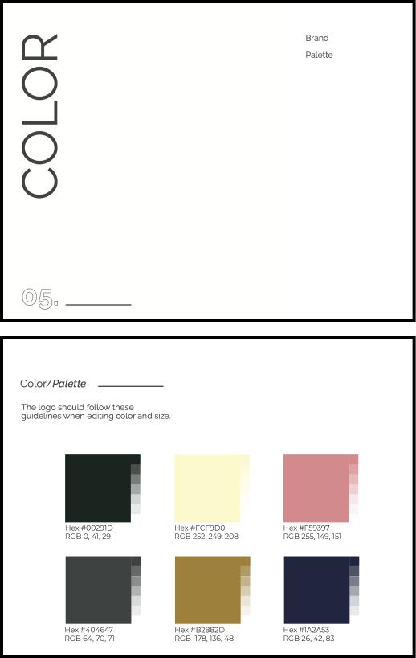
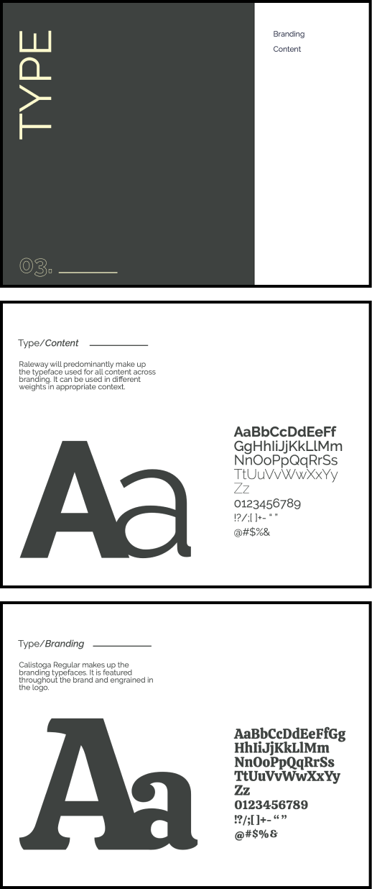
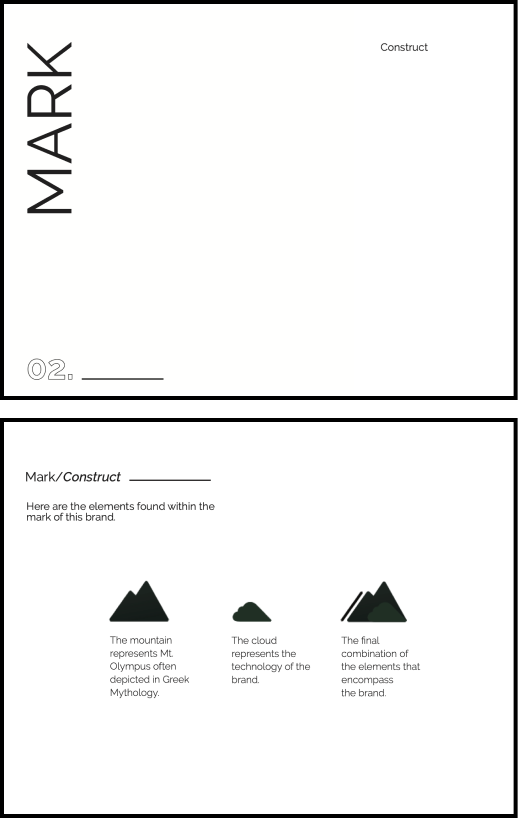
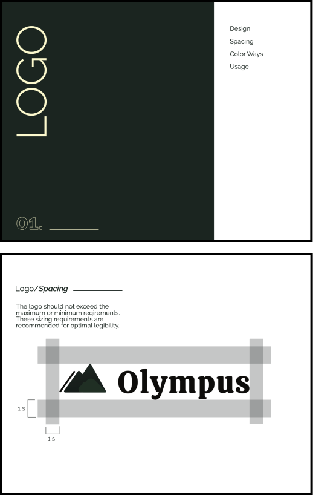
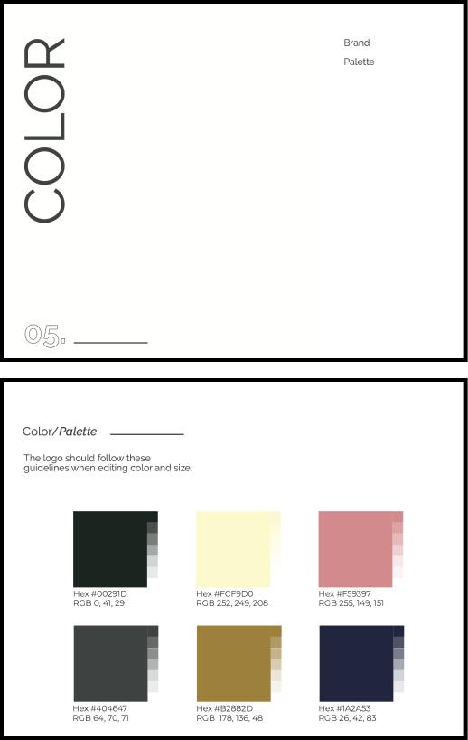
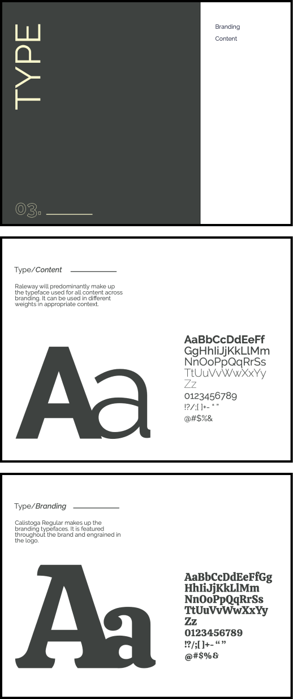

- About
- Projects
- Contact
OL
YM
PU
S
MY ROLE
UX
RESEARCHER
VISUAL
DESIGNER
The Project
This project began with an idea from a client- a desire to enter the cloud service market. It was up to me to establish issues users were facing and then find a solution. Through user research, UX development such as user flows and low fidelity mockups, a final design was reached. The most important piece of this project was the feedback received from each prototype tested with several potential users.
Problem
Many people found some storage services to be confusing and hard to navigate. Another issue I found among cloud service users was that they were being slowed down and finding themselves disorganized with the need to use so many different applications to complete tasks or projects.
Solution
Create a cloud storage service that is easy to digest and navigate. Provide one platform that allows users to upload their media one time to edit, save, and send to their clients in a professional presentation.

The Research
USER SURVEY
In order to establish holes in the growing cloud storage market, I conducted a user survey to gauge who, what, and why people were using this type of service. I also was looking for any opportunities they were consciously aware of or frustrations they have with what is currently offered. This shed some light on potential holes in the market that I could target

COMPETITIVE ANALYSIS

Another key piece in curating a product that would be competitive in the market was conducting a SWOT analysis on competing services to see what they were already doing right, wrong, and where they can improve. One thing I noticed in the way I was performing my SWOT analysis this time was that it was limiting by trying to do an internal analysis on companies I didn’t have incites on. I think I might have gotten more out of this by analyzing it in relation to my own service.

PERSONAS

This survey created a foundation for persona development in which I created two user targets. These two personas would be the profiles of generalized users encompassing their behaviors, needs, and goals. I would reflect back on to remember exactly who I was designing for, making sure to keep their needs in mind.

USER FLOWS
With this information, I could then begin creating user stories based off of actions and tasks users needed and wanted to complete and then into user flows. User flows bring a more visual perspective to the actions created in the user stories.

WIREFRAMES
The wireframes were an easy skeleton of a website to test with users and see where design flaws could be found and corrected before moving on to high fidelity mockups.
Brand Refinement
BRAND IDENTITY

This process began with a mindmapping exercise to allow ideas and thoughts to flow until a brand identity was created. The name and logo came from this exercise. The Olympus Cloud evolved from Greek Mythology and represented a sense of security, being the home to Greek Gods and Goddesses.

DESIGN SYSTEM
Part of the Brand Refinement was developing a style guideline which included typography, color palettes, and other elements of the brand in order to keep consistency among the website and identity.
To facilitate the opportunity to improve user experience, preference testing was utlized in the branding stage. I tested color pallettes and call-to-action button options.
 







HIGH FIDELITY
The last step was to take all of the user research and brand development and turn it into high fidelity mockups and prototypes. The prototypes served as a helpful step in finding potential friction and confusing design flaws.
After running the first iterations through user testing as well as design critiques, adjustments were made among the dashboard page and the call-to-action. These changes made the aesthetic more familiar, consistent, and fluid among the service.
First iteration


Second iteration

Conclusion
Conclusion
Ultimately, design is user-centered. It is making tasks seamless and tapping into what is familiar to provide something delightful. Producing a website that provides both familiar elements and visual design that is entirely new should be refreshing and easy, like breathing. Thus, the Olympus Cloud was created with more organizing options as well as application features to simplify workflows.